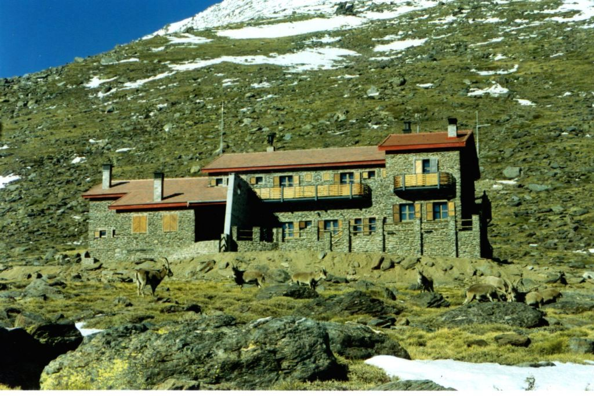
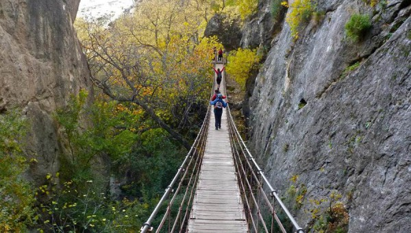

Barranco del Poqueira. al refugio.
El municipio de Pampaneira se encuentra ubicado en la Alta Alpujarra granadina, formando parte del conocido Barranco del Poqueira. Cuenta con una población de 327 habitantes, los cuales se hayan concentrados en su mayoría en su único núcleo urbano, el cual se encuentra situado en enclave muy cercano al río, a una altitud de 1095 metros. El término municipal comprende aproximadamente 18 Km2, disponiéndose de forma alargada en dirección norte-sur sobre la cara meridional de Sierra Nevada. Este territorio ocupa desde la Loma de las Casillas de los Moros, a unos 3085 metros de altitud, hasta la zona de confluencia de los ríos Poqueira y Trevélez, a unos 450 metros, quedando patente la enorme diferencia altitudinal que encontramos en este municipio. El Barranco del Poqueira es uno de los espacios naturales más visitados de la provincia de Granada, un impresionante paraje de la vertiente sur de Sierra Nevada, que desciende desde el Veleta, quedando encajados en sus laderas montañosas tres pueblos de singular belleza: Capileira, Bubión y Pampaneira. Específicamente, Pampaneira presenta algunos parajes de gran atractivo paisajístico gracias a la conservación de especies frondosas como el castaño, el roble melojo o el quejigo, lo que unido al interesante paisaje agrario dominado por el aterrazamiento sustentado por balates de piedra, le confiere una singular presencia.

Los Cahorros. Monachil.
El cañón del río Monachil conforma una de las rutas de senderismo más atractivas, sencillas y populares de la provincia de Granada. Este desfiladero, conocido como Los Cahorros, es también una zona muy frecuentada por los aficionados a la escalada e ideal para pasar un día en el campo por su proximidad a la capital. El paraje de Los Cahorros es una zona de media montaña de materiales calizos, más jóvenes que los silíceos de las altas cumbres, lo queda lugar a formaciones más abruptas pero muy erosionables. El valle en ‘V’ del río Monachil, por su escasez de suelo, la acción humana y la altitud, da lugar a una vegetación de arbustos que convive con las plantas de ribera de río, como las mimbres, los álamos, los juncos y el espartal. Esto determina la fauna, rica en aves insectívoras y granívoras, anfibios y mamíferos como el jabalí y poblaciones de cabra montés.

Cerrada del Río. Castril.
Corto, fácil y espectacular. Este paseo lo tiene todo para que lo disfrute toda la familia. Discurre en gran parte por una pasarela de madera sobre el río Castril, un puente colgante y un túnel. Un bello paisaje natural integrado en la estructura urbana de la población de Castril.